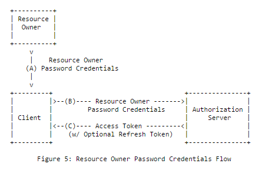
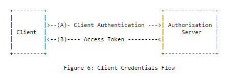
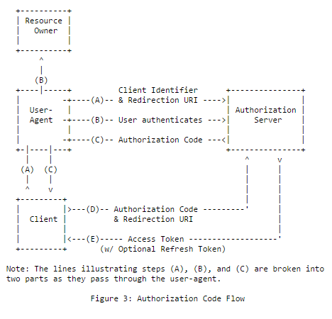
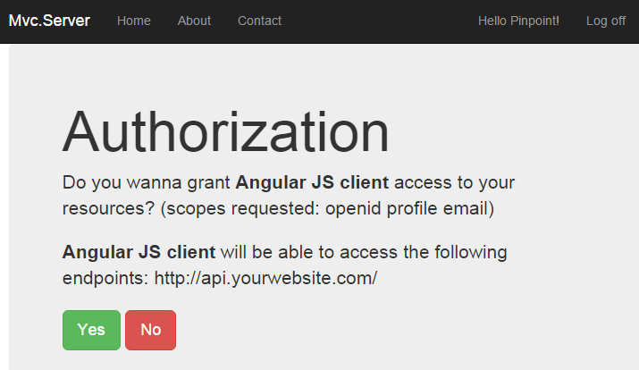
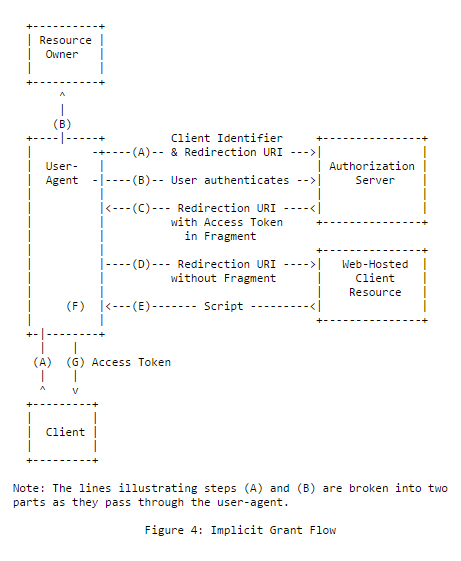

Choosing the right flow
OpenIddict offers built-in support for all the standard flows defined by the OAuth 2.0 and OpenID Connect core specifications: the authorization code flow, the implicit flow, the hybrid flow (which is basically a mix between the first two flows), the resource owner password credentials grant and the client credentials grant.
While not specific to OpenIddict, choosing the best flow(s) for your application is an important prerequisite when implementing your own authorization server ; so here's a quick overview of the different OAuth 2.0/OpenID Connect flows:
Non-interactive flows
Resource owner password credentials flow (not recommended for new applications)
Directly inspired by basic authentication, the resource owner password credentials grant (abbreviated ROPC) is conceptually the simplest OAuth 2.0 flow: the client application asks the user his username/password, sends a token request to the authorization server with the user credentials (and depending on the client authentication policy defined by the authorization server, its own client credentials) and gets back an access token it can use to retrieve the user's resources.

POST /connect/token HTTP/1.1
Host: server.example.com
Content-Type: application/x-www-form-urlencoded
grant_type=password&username=johndoe&password=A3ddj3w
HTTP/1.1 200 OK
Content-Type: application/json;charset=UTF-8
Cache-Control: no-store
Pragma: no-cache
{
"access_token":"2YotnFZFEjr1zCsicMWpAA",
"token_type":"bearer",
"expires_in":3600
}
Caution
This flow is not recommended by the OAuth 2.0 specification as it's the only grant type where the user password is directly exposed to the client application, which breaks the principle of least privilege and makes it unsuitable for third-party client applications that can't be fully trusted by the authorization server.
While popular and trivial to implement (as it doesn't involve any redirection or consent form and unlike interactive flows, doesn't require implementing cross-site request forgery (XSRF) countermeasures to prevent session fixation attacks), its use in new applications is not recommended. Instead, users are encouraged to use the authorization code flow, that doesn't expose passwords to client applications and is not limited to password authentication.
Client credentials grant (recommended for machine-to-machine communication)
The client credentials grant is almost identical to the resource owner password credentials grant, except it's been specifically designed for client-to-server scenarios (no user is involved in this flow): the client application sends a token request containing its credentials and gets back an access token it can use to query its own resources.

POST /connect/token HTTP/1.1
Host: server.example.com
Content-Type: application/x-www-form-urlencoded
grant_type=client_credentials&client_id=s6BhdRkqt3&client_secret=gX1fBat3bV
HTTP/1.1 200 OK
Content-Type: application/json;charset=UTF-8
Cache-Control: no-store
Pragma: no-cache
{
"access_token":"2YotnFZFEjr1zCsicMWpAA",
"token_type":"bearer",
"expires_in":3600
}
Note
Unlike the resource owner password credentials grant, client authentication is not optional when using the client credentials grant and OpenIddict will always reject unauthenticated token requests, as required by the OAuth 2.0 specification.
This means that you CAN'T use the client credentials grant with public applications like browser, mobile or desktop applications, as they are not able to keep their credentials secret.
Interactive flows
Authorization code flow (recommended for new applications)
While the authorization code flow is probably the most complicated flow (as it involves both user-agent redirections and backchannel communication), it's
the recommended flow for any scenario involving end users, whether they log in using a password, a PIN, a smart card or even an external provider.
In return for its complexity, this flow has a great advantage when used in server-side applications: the access_token cannot be intercepted by the user agent.
There are basically 2 steps in the authorization code flow: the authorization request/response and the token request/response.

- Step 1: the authorization request
In this flow, the client application always initiates the authentication process by generating an authorization request including
the mandatory response_type=code parameter, its client_id, its redirect_uri and optionally, a scope and a state parameter
that allows flowing custom data and helps mitigate XSRF attacks.
Note
In most cases, the client application will simply return a 302 response with a Location header to redirect the user agent to the authorization endpoint,
but depending on the OpenID Connect client you're using, POST requests might also be supported to allow you to send large authorization requests.
This feature is usually implemented using an auto-post HTML form.
HTTP/1.1 302 Found
Location: https://server.example.com/authorize?response_type=code&client_id=s6BhdRkqt3&state=af0ifjsldkj&redirect_uri=https%3A%2F%2Fclient.example.org%2Fcb
GET /connect/authorize?response_type=code&client_id=s6BhdRkqt3&state=af0ifjsldkj&redirect_uri=https%3A%2F%2Fclient.example.org%2Fcb HTTP/1.1
Host: server.example.com
The way the identity provider handles the authorization request is implementation-specific but in most cases, a consent form is displayed to ask the user if he or she agrees to share his/her personal data with the client application.

When the consent is given, the user agent is redirected back to the client application with a unique and short-lived token named authorization code that the client will be able to exchange with an access token by sending a token request.
HTTP/1.1 302 Found
Location: https://client.example.org/cb?code=SplxlOBeZQQYbYS6WxSbIA&state=af0ifjsldkj
Warning
To prevent XSRF/session fixation attacks, the client application MUST ensure that the state parameter returned by the identity provider
corresponds to the original state and stop processing the authorization response if the two values don't match.
This is usually done by generating a non-guessable string and a corresponding correlation cookie.
- Step 2: the token request
When the client application gets back an authorization code, it must immediately reedem it for an access token by sending a grant_type=authorization_code token request.
Note
To help the identity provider mitigate counterfeit clients attacks, the original redirect_uri must also be sent.
If the client application is a confidential application (i.e an application that has been assigned client credentials), authentication is required.
POST /connect/token HTTP/1.1
Host: server.example.com
Content-Type: application/x-www-form-urlencoded
grant_type=authorization_code&code=SplxlOBeZQQYbYS6WxSbIA&redirect_uri=https%3A%2F%2Fclient%2Eexample%2Ecom%2Fcb&client_id=s6BhdRkqt3&client_secret=gX1fBat3bV&scope=openid
HTTP/1.1 200 OK
Content-Type: application/json;charset=UTF-8
Cache-Control: no-store
Pragma: no-cache
{
"access_token":"2YotnFZFEjr1zCsicMWpAA",
"token_type":"bearer",
"expires_in":3600
}
Note
To increase security, additional parameters such as code_challenge and code_challenge_method can be specified to bind the authorization code
that will be returned by the authorization endpoint to the original authorization request. This mechanism is known as
Proof Key for Code Exchange and is fully supported by OpenIddict.
Implicit flow (not recommended for new applications)
The implicit flow is similar to the authorization code flow, except there's no token request/response step: the access token is directly returned
to the client application as part of the authorization response in the URI fragment (or in the request form when using response_mode=form_post).

GET /connect/authorize?response_type=token&client_id=s6BhdRkqt3&redirect_uri=https%3A%2F%2Fclient.example.org%2Fcb&scope=openid&state=af0ifjsldkj&nonce=n-0S6_WzA2Mj HTTP/1.1
Host: server.example.com
HTTP/1.1 302 Found
Location: https://client.example.org/cb#access_token=SlAV32hkKG&token_type=bearer&expires_in=3600&state=af0ifjsldkj
Caution
Initially designed for browser applications, this flow is inherently less secure than the authorization code flow and doesn't support Proof Key for Code Exchange. As such, using it in new applications is not recommended.
Warning
To prevent XSRF/session fixation attacks, the client application MUST ensure that the state parameter returned by the identity provider
corresponds to the original state and stop processing the authorization response if the two values don't match.
This is usually done by generating a non-guessable string and a corresponding value stored in the local storage.
When using the implicit flow, the client application MUST also ensure that the access token was not issued
to another application to prevent confused deputy attacks.
With OpenID Connect, this can be done by using response_type=id_token token and checking the aud claim
of the JWT identity token, that must correspond or contain the client_id of the client application.